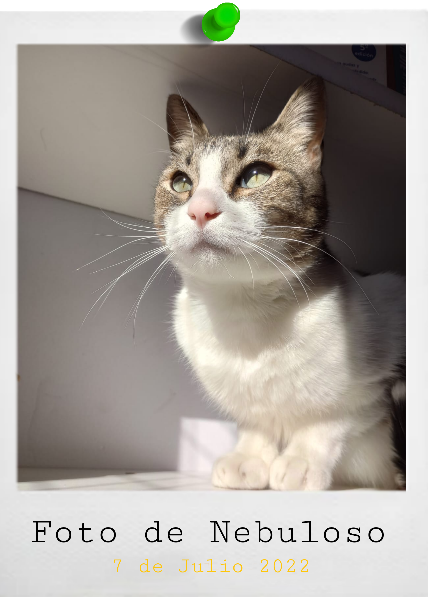
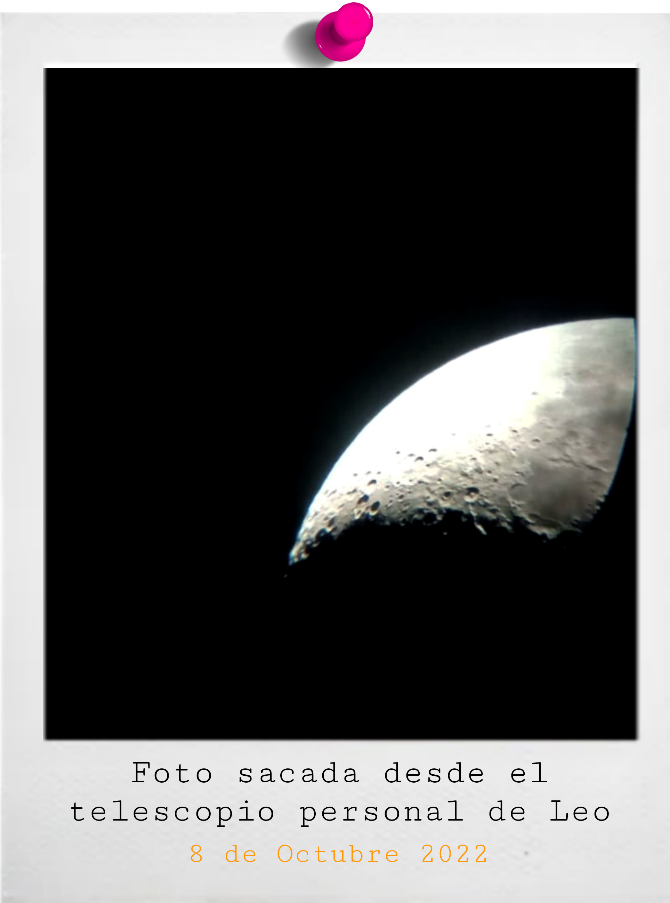
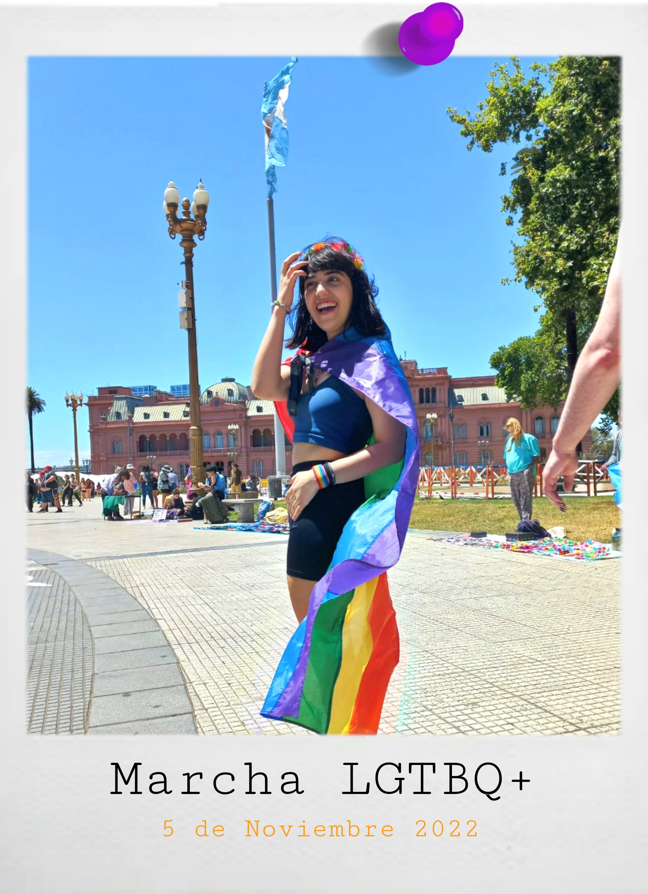
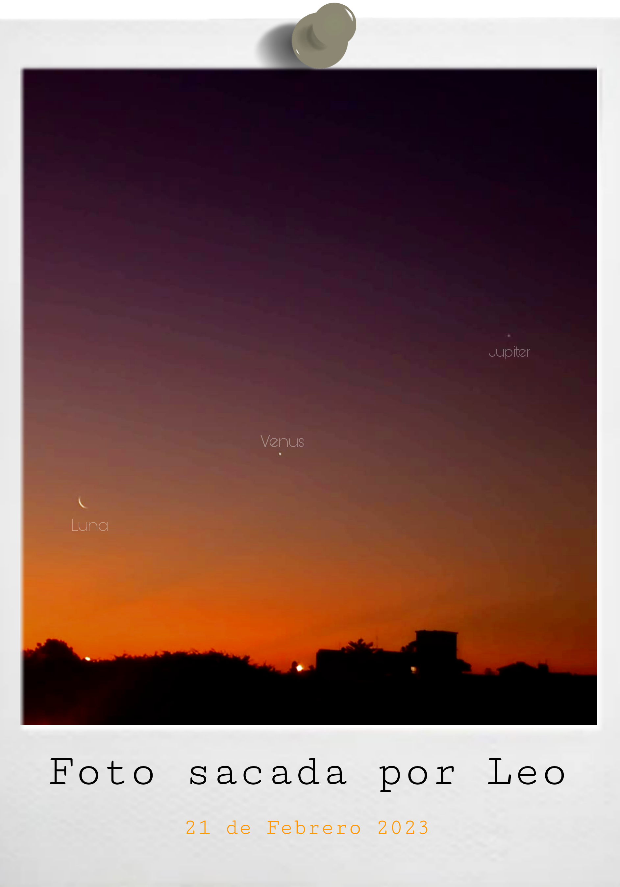
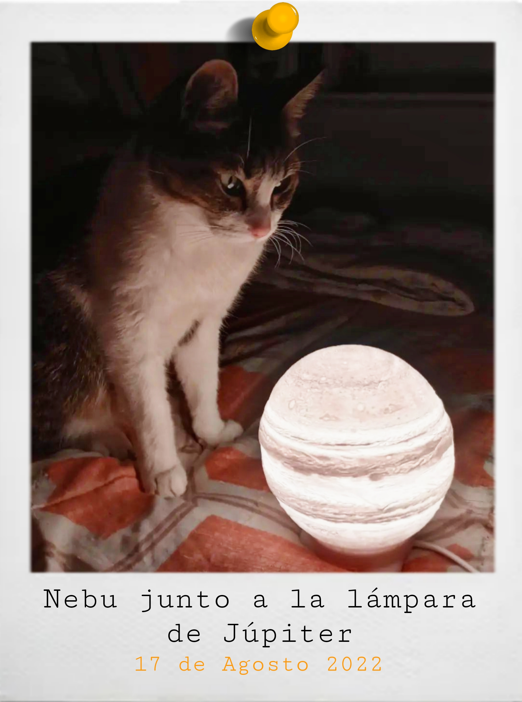
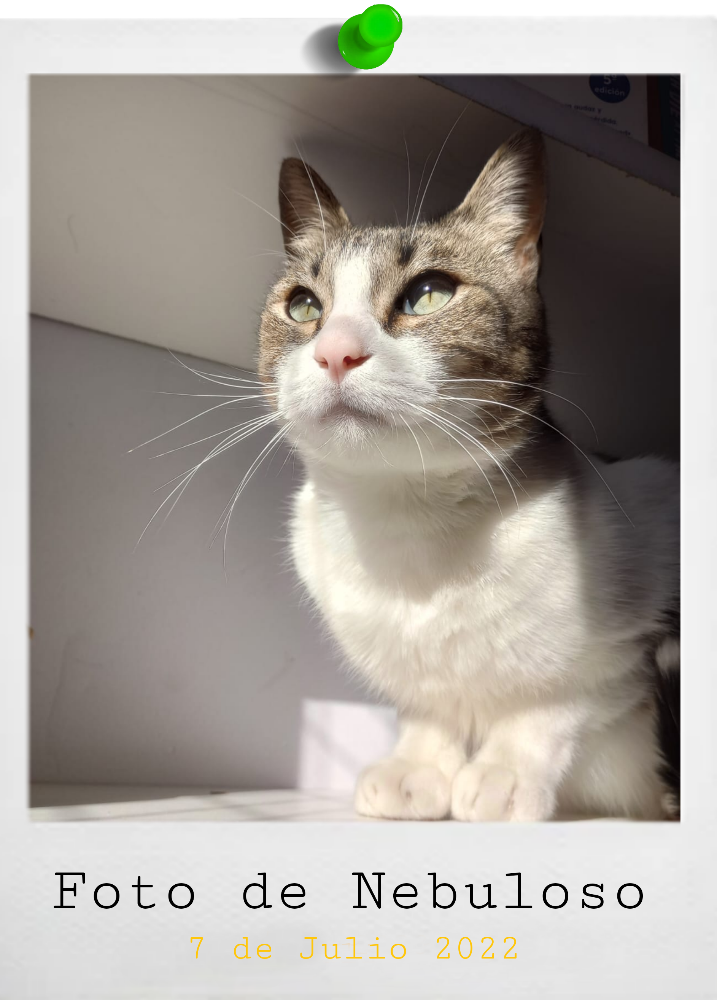
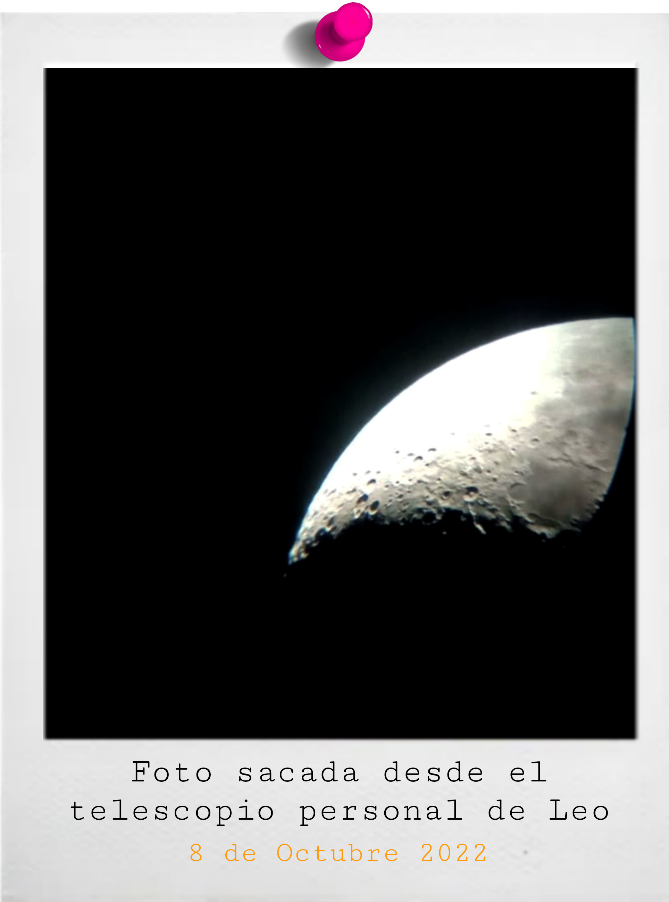
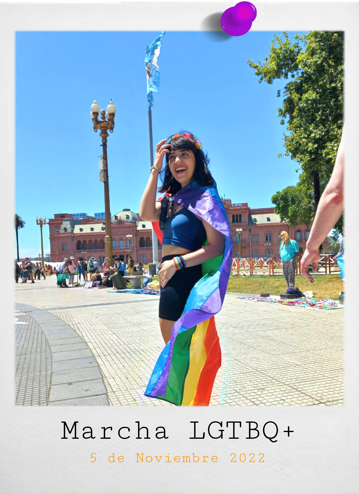
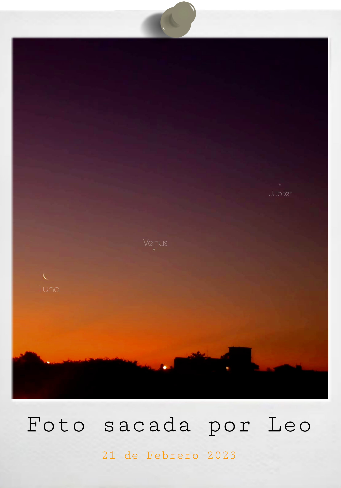
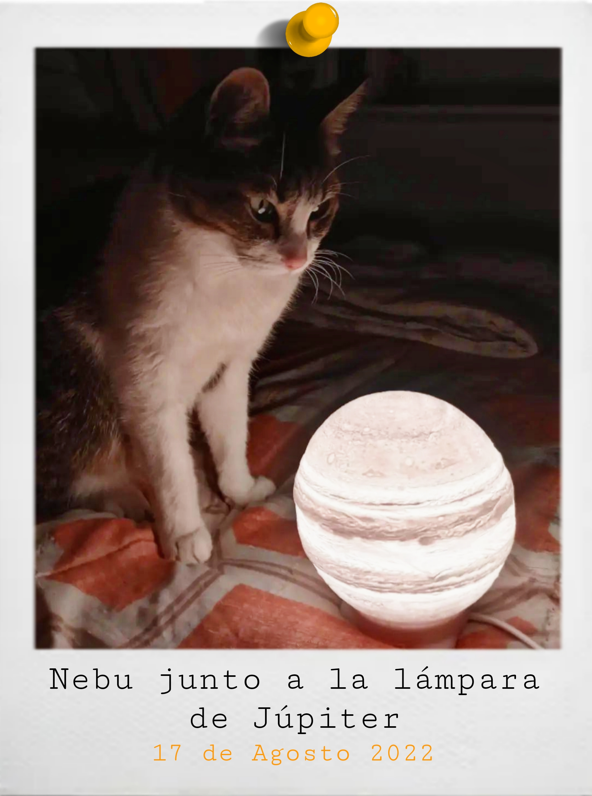

Sobre la autora
ü§µü誂Äç‚ôÄÔ∏è Leonela Bel√©n Sp√≥sito Gonzalez naci√≥ el 14 de abril del 2003 en Buenos Aires, Argentina y
estudia Licenciatura en Artes de la Escritura en la U.N.A. Escribe desde chica y creció rodeada de
libros
e historias que querían ser contadas.
üìñ Sus g√©neros literarios favoritos van desde la fantas√≠a, en todas sus formas, hasta el suspenso y
el thriller.
El romance dentro de estos géneros son un gusto culposo. Su escritora favorita es Victoria Schwab.
Participó en el Mundial de Escritura del 2021 y uno de sus textos fue seleccionado entre los 10
finalistas.
ü™ê Es astr√≥noma aficionada desde los 13 a√±os, aunque ella cree
que fue algo de toda la vida. En 2020, realizó un curso de astronomia.
Su planeta favorito es Júpiter, pero no le digan a los otros.
Nunca le fue bien con los números y tiene un gato llamado Nebuloso. A los catorce años eligió el
veganismo como forma de vida y su verdura de cabecera es el brócoli (sí, le encanta).
üè≥Ô∏è‚Äçüåà Su postura de vida se basa en defender y apostar por las luchas que considera justas, as√≠
como el veganismo, el feminismo y la comunidad LGBT+.
 




creditos por foto: Luna Aurelio





creditos por foto: Luna Aurelio